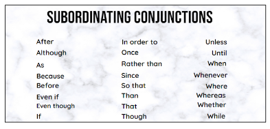

Conjunctions are a part of speech. They link words together with other words, phrases, or clauses.
There are three types of conjunctions:
Remember the acronym:
F.A.N.B.O.Y.S.
(For, And, Nor, But, Or, Yet, So)
Callout
F.A.N.B.O.Y.S
“For” is used when explaining the reason for something.
“And” is used when adding a phrase, clause, or word to another phrase, clause, or word.
“Nor” is used when adding a phrase or clause with a negative idea to another phrase or clause with a negative idea.
“But” is used to show differences between two things.
“Or” is used to show an alternative.
“Yet” is used to provide a contrast to the first statement.
“So” is used to show a result of an event. It is also used to show the consequence of something.
Callout
Correlative Conjunctions
Correlative Conjunctions
| Either/or | We can either stay home or go to the amusement park. |
| Nether/nor | Neither my sister nor my brother wanted to go to the museum with me. |
| Not only/but also | He is not only good at swimming but also gets high marks in Math. |
Callout
SUBORDINATE CONJUNCTIONS
Examples of SUBORDINATE CONJUNCTIONS
Phrases are group of words.
Clauses are combinations of words and phrases that give either complete or incomplete thoughts.
Usually, you know it is a clause when a subject and a verb appear together. A complete sentence requires both a subject and a verb.
There are Two main types of Clauses: Independent clauses & Dependent clauses
This type of clause can stand alone because it presents a complete thought or idea.
Examples:
The type of clause shows an incomplete thought or idea and needs an independent clause for it to make sense.
These are also known as subordinate clauses
Examples: the highlighted portions are dependent clauses
Callout
Noun Clauses
Examples:
Adjective Clauses
Examples:
Adverb Clauses
It usually starts with subordinating conjunctions:

Adverb Clauses
Examples: